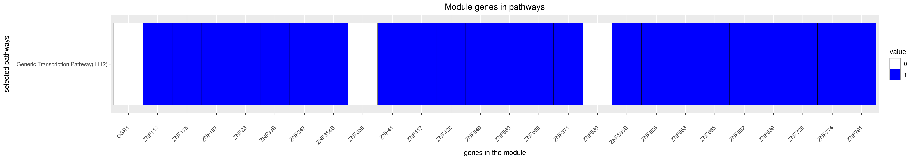

Back to main page
DREAM Module Identification Challenge – Consensus modules
PPI-STRING_Consensus_mod355
| Assigned name |
NA |
| Network |
PPI-STRING |
| Module ID |
PPI-STRING_Consensus_mod355 |
| Module size |
40 genes |
|
Module genes
This module comprises the following genes:
| Gene ID |
Gene Symbol |
Gene Name |
| 130497
|
OSR1
|
odd-skipped related transciption factor 1
|
| 57786
|
RBAK
|
RB associated KRAB zinc finger
|
| 9278
|
ZBTB22
|
zinc finger and BTB domain containing 22
|
| 140685
|
ZBTB46
|
zinc finger and BTB domain containing 46
|
| 7771
|
ZFP112
|
zinc finger protein 112
|
| 163071
|
ZNF114
|
zinc finger protein 114
|
| 7728
|
ZNF175
|
zinc finger protein 175
|
| 10168
|
ZNF197
|
zinc finger protein 197
|
| 7571
|
ZNF23
|
zinc finger protein 23
|
| 23036
|
ZNF292
|
zinc finger protein 292
|
| 7582
|
ZNF33B
|
zinc finger protein 33B
|
| 84905
|
ZNF341
|
zinc finger protein 341
|
| 84671
|
ZNF347
|
zinc finger protein 347
|
| 117608
|
ZNF354B
|
zinc finger protein 354B
|
| 140467
|
ZNF358
|
zinc finger protein 358
|
| 7592
|
ZNF41
|
zinc finger protein 41
|
| 147687
|
ZNF417
|
zinc finger protein 417
|
| 147923
|
ZNF420
|
zinc finger protein 420
|
| 256051
|
ZNF549
|
zinc finger protein 549
|
| 147741
|
ZNF560
|
zinc finger protein 560
|
| 374900
|
ZNF568
|
zinc finger protein 568
|
| 51276
|
ZNF571
|
zinc finger protein 571
|
| 147660
|
ZNF578
|
zinc finger protein 578
|
| 51157
|
ZNF580
|
zinc finger protein 580
|
| 92285
|
ZNF585B
|
zinc finger protein 585B
|
| 100293516
|
ZNF587B
|
zinc finger protein 587B
|
| 84622
|
ZNF594
|
zinc finger protein 594
|
| 80095
|
ZNF606
|
zinc finger protein 606
|
| 26149
|
ZNF658
|
zinc finger protein 658
|
| 79788
|
ZNF665
|
zinc finger protein 665
|
| 91120
|
ZNF682
|
zinc finger protein 682
|
| 115509
|
ZNF689
|
zinc finger protein 689
|
| 440519
|
ZNF724P
|
zinc finger protein 724
|
| 100287226
|
ZNF729
|
zinc finger protein 729
|
| 342132
|
ZNF774
|
zinc finger protein 774
|
| 163049
|
ZNF791
|
zinc finger protein 791
|
| 347344
|
ZNF81
|
zinc finger protein 81
|
| 162962
|
ZNF836
|
zinc finger protein 836
|
| 91664
|
ZNF845
|
zinc finger protein 845
|
| 342892
|
ZNF850
|
zinc finger protein 850
|
|
Functional annotation
Modules were tested for enrichment in functional and pathway annotations using two complementary approaches:
1. To select a small number of specific / non-redundant annotations for each module, a regression-based approach was used;
2. To obtain the complete set of enriched annotations, an extension of Fisher’s exact test that takes annotation bias into account was employed (Wallenius’ non-central hypergeometric distribution).
Most specific annotations for this module
1Regression coefficient
2Fisher’s exact test nominal P-value
3Annotation source (Reactome, GO biological process (BP), molecular function (MF) and cellular component (CC))
4GO category or Reactome pathway
5High-level branch of annotation tree
Gene membership

All enriched annotations
Gene Ontology
11Nominal enrichment p-value (Wallenius’ noncentral hypergeometric distribution)
2FDR corrected p-value (Benjamini-Hochberg)
Reactome
| P-value1 |
FDR2 |
Term |
| 0e+00
|
0e+00
|
GENERIC TRANSCRIPTION PATHWAY
|
|
11Nominal enrichment p-value (Wallenius’ noncentral hypergeometric distribution)
2FDR corrected p-value (Benjamini-Hochberg)
Mouse mutant phenotypes
11Nominal enrichment p-value (Wallenius’ noncentral hypergeometric distribution)
2FDR corrected p-value (Benjamini-Hochberg)
Generated on: Thu Aug 30 17:37:14 2018 - R2HTML